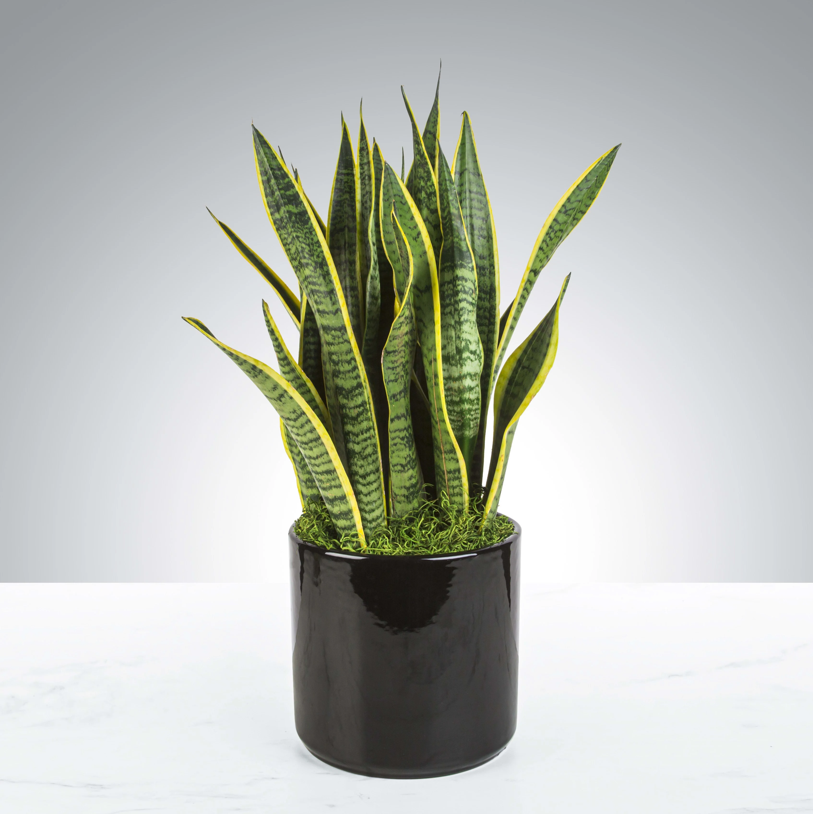

Snake plants, also known as Dracaena Trifasciata are a common house plant. They are native to Asia and Africa, and require lots of sunlight. They are an easy plant to take care of, and do not require watering often
Monsteras are native to Mexico and Central America. They are easily recognizable because of their natural leaf-hols that resemble Swiss cheese. They thrive best in indirect sunlight and typically grow very tall.
Aloe vera is a cactus-like succulent that orginates from the Arabian. They are know for the colourless gel that they produce because of its numerous benefits. They are easy to care for and require plenty of sunlight, and watering regularly.
Golden Pothos are almost impossible to kill which is where they get their nickname Devil's Ivy/Vine. They are very low maintenance as they only require minimal sunlight and watering every once in a while. Fun Fact, they mimic their environment, making them able to thrive and stay green in both light and dark environments!
They are native to Central America and the Carribean, and are known as the sweetheart plant. They get their nickname because of their beautiful heart shaped leafs. These Philodendrons like bright light but its leaves can burn in direct sunlight.

Zanzibar Gem's go by many names, such as ZZ plants, Zuzu plants, etc. They are native to eastern Africa and are considered as low maintenance plants. Though they are succulents it is best not to be set in direct sunlight as they can easily burn
Provided below are websites where you can learn more about the care for each plant.